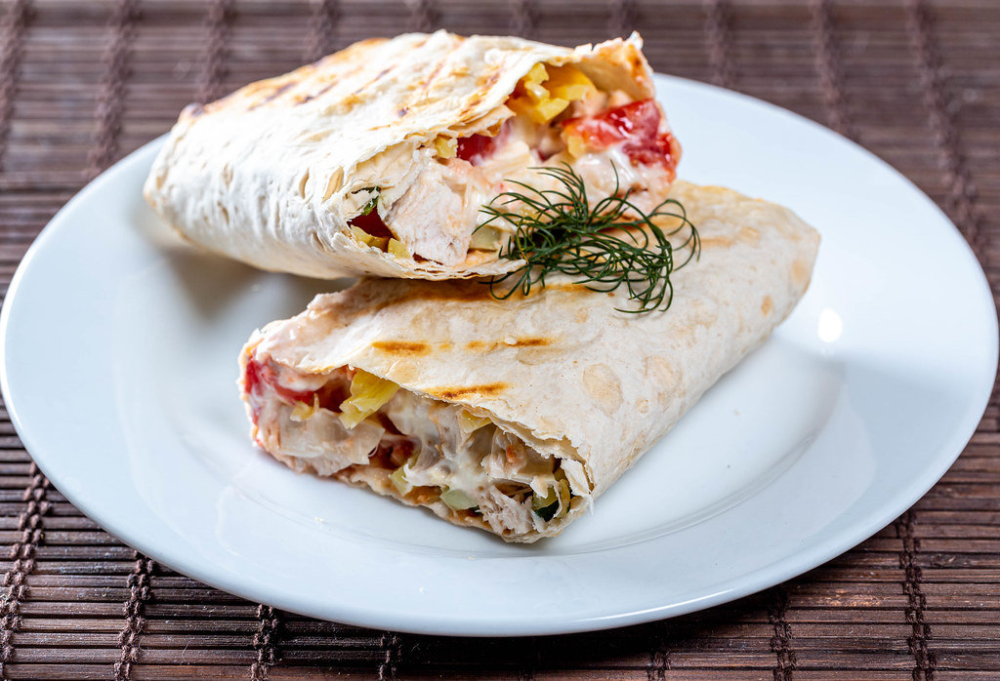

Shawarma Recipe

Description
An amazing simple arab meat pocket dish
that can tantalize your tastebuds!
Ingredients
- 1 pc Bread wrap(Saj bread preferred!)
- 100kg of boneless chicken thighs
- 1 African Automatic Horizontal Broiler Grill Rotisserie Shawarma Gyre Doner Machine
- Model:AFRICAN-HBGR-350
- 3 liters of garlic sauce
- Half a french fry
- 2 pickles
Steps
- Begin by assembling your chicken stack on the AFRICAN-HBGR-350
- Light the spit using a bic lighter
- Rotate manually with bare hands for 6-8 hours
- Slice vertically the meat using a knife
- Place 100 grams of meat onto your saj bread
- Add pickles and half a french fry
- Voila!
- Donate 3 liters of garlic sauce to the food shelter
Back to other recipes.